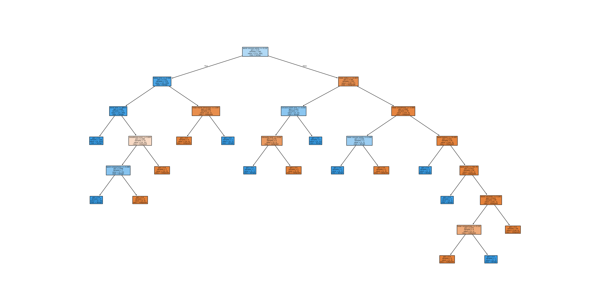

Model Card for Predictive Maintenance on Component 7
Model Description
This model estimates weather the given component has failed or not, based on input data from ['Air temperature [K]', 'Process temperature [K]', 'Rotational speed [rpm]', 'Torque [Nm]']
Development Team
| Development Information | Text |
|---|---|
| Development Team | René Petersen |
| Development Organisation | Neurospace ApS Nydamsvej 17 8362 Hørning |
| Customer Team | Answer is always 42 |
| Customer Organisation | 42 Data Stream Boulevard, Innova City, CA 90210 |
| Supporting e-mail | support@abc.dk |
Intended Use
| Text | Information |
|---|---|
| Primarily Intended Use | Predictive maintenance on component 7 |
| Primarily Intended Users | Operators in control room |
| Out of Scope applications | Predictive maintenance on other components |
Model Details
| Model details | Text |
|---|---|
| Model Date | 10/06/2025 |
| Model Type | RandomForestClassifier |
| Model Version | 0.0.1 |
| Electricity used for training model | 5.166632127527327e-06 kWh |
| Estimated CO2 esmissions | 0.0005114965806252054 gram |
| Scheduled Retraining date | 2025/08/10 |
| Expected lifetime | 2027/10/2 |
Model Architecture

| Parameter | Params |
|---|---|
| n_estimator | 10 |
| max_depth | None |
| min_samples_split | 2 |
| min_samples_leaf | 2 |
| max_features | sqrt |
Training Data
The model is trained on 350 observations, and tested on 150 observations
Model is dependent on the following features: ['Air temperature [K]', 'Process temperature [K]', 'Rotational speed [rpm]', 'Torque [Nm]']
Example input data
| Air temperature [K] | Process temperature [K] | Rotational speed [rpm] | Torque [Nm] |
|---|---|---|---|
| 298.1 | 308.6 | 1551 | 42.8 |
| 298.2 | 308.7 | 1408 | 46.3 |
| 298.1 | 308.5 | 1498 | 49.4 |
| 298.2 | 308.6 | 1433 | 39.5 |
| 298.2 | 308.7 | 1408 | 40 |
| 298.1 | 308.6 | 1425 | 41.9 |
| 298.1 | 308.6 | 1558 | 42.4 |
| 298.1 | 308.6 | 1527 | 40.2 |
| 298.3 | 308.7 | 1667 | 28.6 |
| 298.5 | 309 | 1741 | 28 |
Example output data (0 is good, 1 is failure)
| Target |
|---|
| 0 |
| 0 |
| 0 |
| 0 |
| 0 |
| 0 |
| 0 |
| 0 |
| 0 |
| 0 |
Training/Test split
| Dataset | Number | Percentage of dataset |
|---|---|---|
| Training | 350 | 70.00% |
| Test | 150 | 30.00% |
Number of representatives in train and test
| Dataset | Number of normal components | Number of failure components |
|---|---|---|
| Training | 337 | 13 |
| Test | 147 | 3 |
Bias in training data
| Source | Bias |
|---|---|
| Input Data | [ ] |
| Data Leakage | [ ] |
| Labeling | [ ] |
| Test Data | [ ] |
| Evaluation | [ ] |
Bias-effect is considered Neutral, as sensor data is expected to be biased with the same amount of noise.
Validation of model
The table below presents the accuracy of the training and test data
| Dataset | Accuracy |
|---|---|
| Train | 99.43% |
| Test | 94.00% |
Below is presented Test Confusion Matrix
| True Normal | True Failure | |
|---|---|---|
| Predicted Normal | 138 | 0 |
| Predicted Failure | 9 | 3 |
Metrics and Limitations
When component 7 is under service
Faulty input data